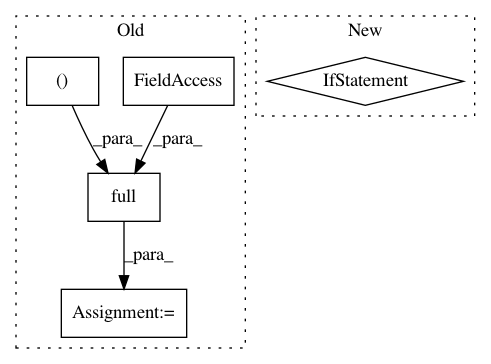

e3c4a40fa2e5c76656ba0f210213e427683b3ad5,src/ctc.py,CTCPrefixScore,cheap_compute,#CTCPrefixScore#Any#Any#Any#,68
Before Change
for t in range(start, self.input_length):
// prev_blank
prev_blank = np.full((odim), r_prev[t-1, 1], dtype=np.float32)
// prev_nonblank
prev_nonblank = np.full((odim), r_prev[t-1, 0], dtype=np.float32)
if last_char in candidates:
After Change
psi = np.logaddexp(psi, phi[t-1,]+self.x[t, candidates])
// P(end of sentence) = P(g)
if self.eos in candidates:
psi[candidates.index(self.eos)] = sum_prev[-1]
return psi, np.rollaxis(r, 2)
In pattern: SUPERPATTERN
Frequency: 3
Non-data size: 5
Instances
Project Name: Alexander-H-Liu/End-to-end-ASR-Pytorch
Commit Name: e3c4a40fa2e5c76656ba0f210213e427683b3ad5
Time: 2019-10-31
Author: alexliu36@gmail.com
File Name: src/ctc.py
Class Name: CTCPrefixScore
Method Name: cheap_compute
Project Name: biolab/orange3
Commit Name: 03c4b0c6e6f8f19514d46defcde14688251f313c
Time: 2018-08-24
Author: tomaz.hocevar@fri.uni-lj.si
File Name: Orange/widgets/unsupervised/owmds.py
Class Name: OWMDSGraph
Method Name: compute_sizes
Project Name: eriklindernoren/PyTorch-YOLOv3
Commit Name: 2ee8ac1546400645908b61ef015cdf5d71aa34cc
Time: 2019-04-22
Author: eriklindernoren@live.se
File Name: utils/datasets.py
Class Name:
Method Name: pad_to_square